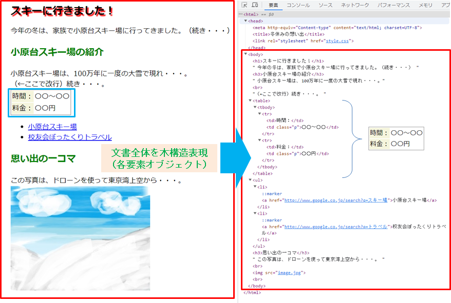
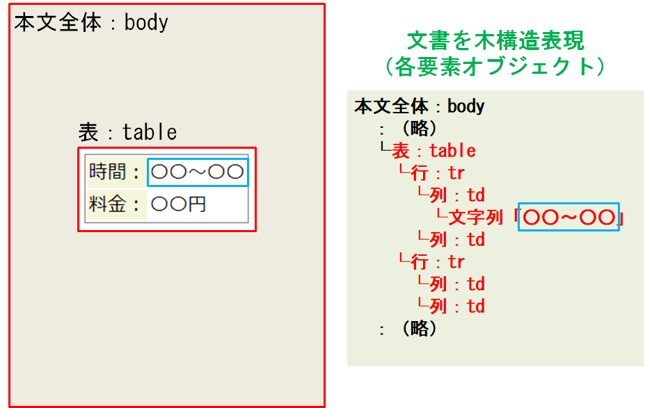

<html></html>
<head>
<meta charset="UTF-8">
<title>オブジェクト指向プログラミング（岩切准教授）</title>
<link rel="stylesheet" href="style.css">
</head>
<body>
 
<h2>DOMとイベント処理</h2>
 
<h4><a name="01">DOM（Document Object Model）の概要</a></h4>
<p>

 DOMは、HTMLなどでマークアップされた文書（Document）が持つ各要素（Object）の包含関係を木構造でモデル表現（Model）したものです。このモデル表現によって、文書中の各要素を個別に指定して、Javascriptなどのプログラムで操作したり、利用することができるようになります。（引用：「Wikipedia：<a href="https://ja.wikipedia.org/wiki/Document_Object_Model">Document Object Model</a>」）
</p>
<div align="center">
<a href="./hp/">

</a>
<br><br>

</div>
<br><br>
 
<h4><a name="02">DOMを用いたイベント処理例</a></h4>
<p>

 イベント処理とは、ユーザ操作などの何かしらのイベント（事象）発生に基づいてデータをプログラム処理する仕組みのことです。イベントとしては、マウス操作やタッチ操作、キーボード入力、タイマなどが利用できます。イベント発生によりプログラムを動作させる仕組みは、イベントドリブン方式やイベント駆動方式などと呼ばれています。イベント発生を監視する機能をイベントリスナ、各イベントに割り当てられた処理機能（プログラム）をイベントハンドラと呼びます（リスナとハンドラを同義とする資料が多い）。最近では、マウス操作などによるグラフィカルユーザーインターフェース（GUI）が主流となっており、様々なデバイスでイベント駆動型のプログラム処理機構が採用されています。（引用：「Wikipedia：<a href="https://en.wikipedia.org/wiki/Event-driven_programming">Event-driven programming</a>」）
</p>
<p>

 Javascriptでは、発生したイベントに応じ、DOMを用いて指定したページ要素を直接書き換えることで、インタラクティブ（Interactive）な操作性をブラウザ上で提供できます。
</p>
<p><a href="./JS/mouse_onoff.html">mouse_onoff.html</a></p>
<pre class=c>
&lt;html lang="ja"&gt;
&lt;head&gt;
&lt;meta charset="utf-8"&gt;
&lt;script&gt;

 // オブジェクト target の内部テキストを再定義する関数

 function m0(){

   document.getElementById("target").innerText="■■■■"; // DOM指定

 }

 function m1(){

   document.getElementById("target").innerText="★お宝★"; // DOM指定

 }
&lt;/script&gt;
&lt;/head&gt;
 
&lt;body&gt;
&lt;!--

 divタグで囲まれた範囲： オブジェクト名 target

 →　マウスカーソルの状態で処理関数を選択

 --&gt;
&lt;div id="target" onmouseout="m0();" onmouseover="m1();"&gt;

 ■■■■
&lt;/div&gt;
&lt;/body&gt;
&lt;/html&gt;
</pre>
 
<p><a href="./JS/onchange.html">onchange.html</a></p>
<pre class=c>
&lt;html lang="ja"&gt;
&lt;head&gt;
&lt;meta charset="utf-8"&gt;
&lt;script&gt;

 function page(){

   var obj = document.forms["open"].elements["url"]; // 本文フォームのセレクタオブジェクト、DOM指定

   var no  = obj.selectedIndex; // オブジェクトが持つ選択した値のインデックス

   if(no != 0){             // 有効な選択肢（0番以外）の場合、カッコ内を処理

     location.href = obj.options[no].value;  // ページ属性値（href）強制変更

   }

 }
&lt;/script&gt;
&lt;/head&gt;
 
&lt;body&gt;
&lt;!--

 オブジェクト名： open

 --&gt;
&lt;form name="open"&gt;
&lt;!--

   オブジェクト名： url

   ※document.forms["open"].elements["url"] で指定可能

   --&gt;
&lt;select name="url" onChange="page()"&gt;
&lt;option value=""&gt;ページ選択&lt;/option&gt;
&lt;option value="https://www.mod.go.jp/nda/"&gt;防衛大学校&lt;/option&gt;
&lt;option value="http://www.nda.ac.jp/cs/"&gt;情報工学科&lt;/option&gt;
&lt;/select&gt;
&lt;/form&gt;
 
&lt;/body&gt;
&lt;/html&gt;
</pre>
 
<p><a href="./JS/keyupdown.html">keyupdown.html</a></p>
<pre class=c>
&lt;html&gt;
 
&lt;head&gt;
&lt;meta charset="UTF-8"&gt;
&lt;/head&gt;
 
&lt;body&gt;
&lt;canvas id="mycanvas" width="640" height="640"&gt;&lt;/canvas&gt;
 
&lt;script&gt;

 var cvs = document.getElementById("mycanvas"); // DOM指定

 var ctx = cvs.getContext("2d");
&lt;/script&gt;
 
&lt;script&gt;

 // イベントリスナにハンドラを登録（キー押下：KeyDn）

 document.addEventListener('keydown', KeyDn);
 
function KeyDn(event){

   ctx.clearRect(0, 0, 640, 640);  // 描画消去

   switch (event.code) {

     case "ArrowUp"   :  // ↑キー

       ctx.fillRect(50,  0, 50, 50);

       break;

     case "ArrowDown" :  // ↓キー

       ctx.fillRect(50,100, 50, 50);

       break;

     case "ArrowLeft" :  // ←キー

       ctx.fillRect( 0, 50, 50, 50);

       break;

     case "ArrowRight":  // →キー

       ctx.fillRect(100,50, 50, 50);

       break;

   }

 }
&lt;/script&gt;
&lt;/body&gt;
&lt;/html&gt;
</pre>
 
</body>
</html>